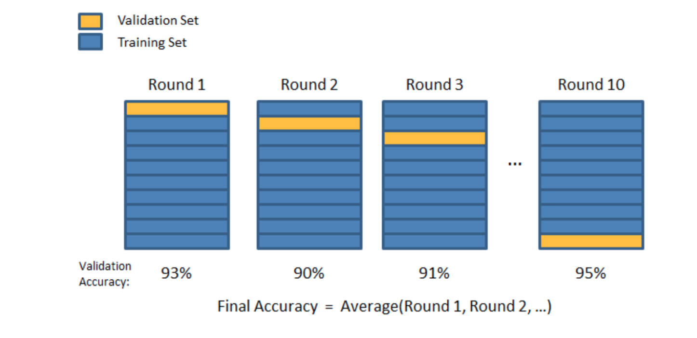
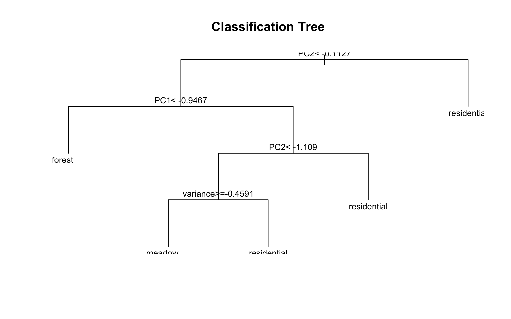
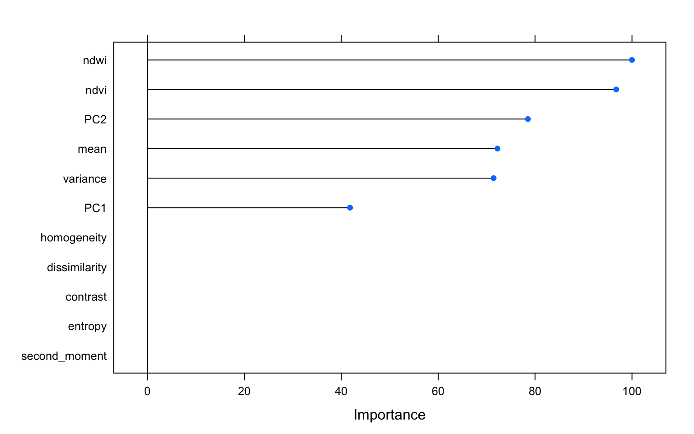
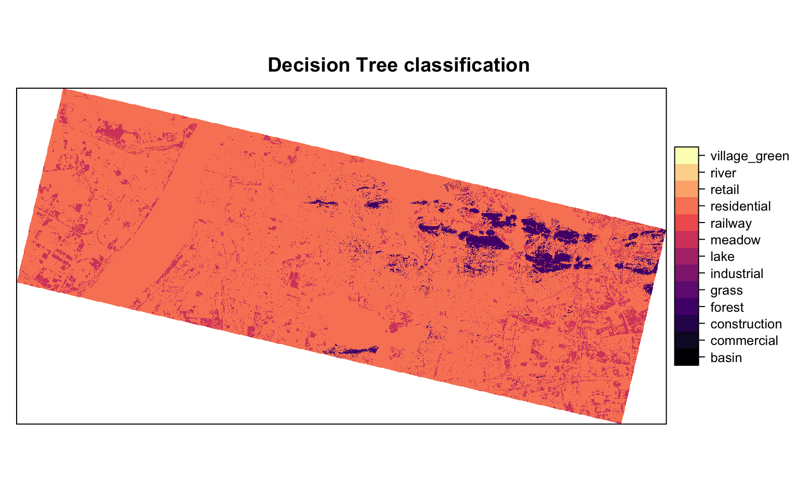

Introduction
Machine learning (ML) is currently buzzwords in urban analytics. It is a process of automated model building that generates a predictive model that can reasonably explain not just the data that it is trained on, but generalised to other data from the same data generating process. Traditional models are rules that operate on data to produce and ouput. Machine learning approaches, on the other hand, usually take outputs and data to figure out the approriate rules. While traditional models have to rely upon external justification for the rules, the promise of ML is that it discovers these rules empirically, without a theoretical basis for understanding the correlations among the differnet variables.One important thing to note about machine learning is that the models are restricted to the hypothesis space and the search is not among the arbirtary model specifications. For example, in machine learning, that is about logistic regression model, the features are restricted to enter the model in a linear fashion, where as in a decision tree, they behave non-linearly based on the partition. While this may be too esoteric for students who are starting out on understaning ML techniques, it is useful to temper the expectations regarding what kinds of models can we expect to be generated by the various algorithms. In other words, there is no gaurentee that the ML model is the best model that explains and predicts the observed data. Practical ML is as much an art as it is a science.
It might be beneficial to illustrate some of the salient points about ML though a practical example that interests planners. Identifying objects and land use classes from remotely sensed images of urban areas.
Stages of ML approach
There are 5 distinct stages of Machine Learning. Let’s focus on supervised learning, a subset of ML approaches. In supervised learning, target outcome is known for a vector of features and the dataset consists of a collection of the features and target. So for example, land use class is frequently the target (dependent variable) and the featues (independent variables) are various bands, indices, textures, proximity etc.
- Identifying appropriate data sources, especially labelled data. Wrangle, Clean and Assemble (Data Preprocessing)
- Feature Engineering. Identify the right variable combinations from the independent variables.
- Splitting the data into training, validation and holdout.
- Iterating over the algorithm to fit best explain the training dataset. Use the validation data to tune the model.
- Choosing the best model that does well (predictively) on the holdout dataset.
ML approaches are fundamentally iterative. I cannot emphasise this enough. While there are distinct steps in the appoaches, because later stages crucuially depend on earlier stages, all stages, except the last one, are iterative. We usually iterate to find better fitting algorithms to the data, which necessitates changes to feature engineering and selection as shown in the figure below.

Image credit: Goyal (2018)
In the following steps, for the sake of brevity, I do not demonstrate the iterative aspects of ML.
Data Acquisition and Preprocessing
For this exercise, I am going to use a 3m, 4-band Planetscope image from around Wuhan, China. You can download it from around here. The 4 bands are Blue, Green, Red and Near InfraRed (NIR). These are initial set of features.
library(raster)
wuhan_raster <- brick('./20170914_022008_0f28/20170914_022008_0f28_3B_AnalyticMS_SR.tif')
names(wuhan_raster) <- c('Blue', "Green", "Red", 'NIR')
wuhan_raster
# class : RasterBrick
# dimensions : 4695, 9068, 42574260, 4 (nrow, ncol, ncell, nlayers)
# resolution : 3, 3 (x, y)
# extent : 231990, 259194, 3372027, 3386112 (xmin, xmax, ymin, ymax)
# coord. ref. : +proj=utm +zone=50 +datum=WGS84 +units=m +no_defs +ellps=WGS84 +towgs84=0,0,0
# data source : /Users/kaza/Dropbox/urban_analysis_tutorials/datasets/4.machinelearning/20170914_022008_0f28/20170914_022008_0f28_3B_AnalyticMS_SR.tif
# names : Blue, Green, Red, NIR
# min values : 0, 0, 0, 0
# max values : 65535, 65535, 65535, 65535
plotRGB(wuhan_raster, r=3, g=2, b=1, stretch='hist', main='True color composite') #TRUE color compositeplotRGB(wuhan_raster, r=4,g=3,b=2, stretch='hist', main = 'False color composite') # FALsE Color CompositeThe labels are vector data derived from Openstreetmap data. It is availale as part of the zip file you downloaded earlier. In particular, the labels are in the ‘landuse’ class.
library(sf)
shp <- st_read("./landuse3.shp")
# Reading layer `landuse3' from data source `/Users/kaza/Dropbox/urban_analysis_tutorials/datasets/4.machinelearning/landuse3.shp' using driver `ESRI Shapefile'
# Simple feature collection with 629 features and 25 fields
# geometry type: MULTIPOLYGON
# dimension: XY
# bbox: xmin: 114.21 ymin: 30.45716 xmax: 114.4891 ymax: 30.57547
# epsg (SRID): 4326
# proj4string: +proj=longlat +datum=WGS84 +no_defs
shp <- st_transform(shp, proj4string(wuhan_raster)) ## Note that shp was not in the same projection as raster, so transform it to make the spatial operations possible. In general, it is quicker and easier to transform vectors.
summary(shp$landuse)
# basin commercial construction forest grass
# 7 42 41 51 42
# industrial lake meadow railway residential
# 56 3 64 1 293
# retail river village_green
# 25 2 2
plot(shp[,'landuse'])
For the sake of simplicity, lets sample 15 locations from each polygon and use that as the basis for our dataset.
ptsamp <- shp %>%
st_sample(rep(15, nrow(shp)), type = 'random') %>%
st_sf() %>%
st_join(shp, join=st_intersects)We will ultimately extract the raster values from the locations of these points to construct the columns in the training data. The landuse class becomes the target variable.
Feature engineering
Feature engineering is careful construction of new variables from raw data. For example, we can construct ‘Age’ from ‘Birth Date’ and ‘CurrentDate’, even when ‘CurrentDate’ is a not explicitly part of the dataset. Or combining two categorical variables into one.
Feature engineering is one of the critical steps in ML approaches and is often overlooked. Because the raw data can be transformed into any number of features, it is critical that we need to draw upon domain knowledge to produce a proper ‘hypothesis space’ to find the ‘best model’.
“Coming up with features is difficult, time-consuming, requires expert knowledge. ‘Applied machine learning’ is basically feature engineering.” - Andrew Ng
For example it is common practise to construct Normalised Difference Index by doing some band math. One such indes is Normalised Difference Vegetation Index (NDVI) that is based on the ratio of NIR and Red. Normalised Difference Water Index is based on NIR and Green.
band_math_ratio <- function(img, k, i) {
bk <- img[[k]]
bi <- img[[i]]
vi <- (bk - bi) / (bk + bi)
return(vi)
}
ndvi <- band_math_ratio(wuhan_raster, 4,3)
names(ndvi) <- 'ndvi'
ndwi <- band_math_ratio(wuhan_raster, 2,4)
names(ndwi) <- 'ndwi'
plot(ndvi, col = rev(terrain.colors(10)), main = 'NDVI')plot(ndwi, col = rev(terrain.colors(10)), main = 'NDWI')Exercise
Calculate
- Visible Atmospherically Resistant Index \((Green - Red)/ (Green + Red - Blue)\)
- Modified Soil Adjusted Vegetation Index (MSAVI2): \(\frac{(2* NIR+1)-\sqrt{(2*NIR+1)^2-8*(NIR-Red))}}{2}\)
Look up the original references for these indices and see if they can really be applied to Planetscopse sensors. What are the limitations of each of these indices including NDVI, NDWI
Plot these indices and see if the values visually distinguish different classes.
It is often useful to look at correlations within the different bands in the dataset to see if different features are adding much to the information content.
pairs(wuhan_raster)From this plot, Blue and Red are pairwise heavily correlated (linearly) to Green. One way to reduce the dimensions is to extract the principal components of the data that encomposses most of the information.
library(RStoolbox)
wuhan_PCA <- rasterPCA(wuhan_raster, spca =TRUE) #scaled version.
summary(wuhan_PCA$model)
# Importance of components:
# Comp.1 Comp.2 Comp.3 Comp.4
# Standard deviation 1.729329 0.9746140 0.23241792 0.07436020
# Proportion of Variance 0.747645 0.2374681 0.01350452 0.00138236
# Cumulative Proportion 0.747645 0.9851131 0.99861764 1.00000000
plot(wuhan_PCA$map[[1:2]], nr=2)From the summary, it would appear that the first two principal components effectly capture more than 98% of the variation. We can just use those two instead of the 4 bands.
In general, in remote sensing applications, dimensionality reduction is done on the entire dataset rather than the training sample. It is a matter of convention, though it is probably more accurate to reduce the dimensions using correlations in the training data only.
Textures
Textures describe the spatial distribution of intensities, which makes it useful in classification of similar regions in different images. Haralick textures are usually from a discretised gray level images.
Image credit: Eichkitz et.al (2013)
The main idea is that an gray level image is discretised into n-levels. In a moving window of 3x3 or 5x5, the proportion of co-occurence of two levels is noted in a matrix. From the Gray Level Co-Occurrence Matrix (GLCM), we can derive texture features such as Variance Homogeneity, Dissmilarity etc.
We can use the 1 st principal component as an input for the GLCM.
library(glcm)
textures <- glcm(wuhan_PCA$map[[1]], shift=list(c(0,1), c(1,1), c(1,0), c(1,-1)))
textures <- textures[[-8]]Exercise
The above code calculates isotropic textures (taking the mean of all the directions). However, sometimes it might be better to calculate anisotropic textures for urban orbject detection. See Pesaresi et.al (2008). Calculate the PanTex features from Pesaresi et.al based on maximum, instead of the mean of different directions for this image.
Constructing the training dataset
(wuhan_analysis_raster <- stack(wuhan_PCA$map[[1:2]],ndvi, ndwi, textures))
# class : RasterStack
# dimensions : 4695, 9068, 42574260, 11 (nrow, ncol, ncell, nlayers)
# resolution : 3, 3 (x, y)
# extent : 231990, 259194, 3372027, 3386112 (xmin, xmax, ymin, ymax)
# coord. ref. : +proj=utm +zone=50 +datum=WGS84 +units=m +no_defs +ellps=WGS84 +towgs84=0,0,0
# names : PC1, PC2, ndvi, ndwi, mean, variance, homogeneity, contrast, dissimilarity, entropy, second_moment
# min values : -3.07275581, -9.65130363, -0.36895072, -0.77007209, 0.03125000, 0.91175974, 0.01047714, 0.00000000, 0.00000000, 0.00000000, 0.11111111
# max values : 28.0441893, 2.8748238, 0.7871753, 0.4260036, 0.9826389, 936.7556695, 1.0000000, 143.2222222, 11.4444444, 2.1972246, 1.0000000
raster_sample <- extract(wuhan_analysis_raster, ptsamp) %>% as.data.frame()
raster_sample$landuse <- factor(ptsamp$landuse)
raster_sample <- raster_sample[complete.cases(raster_sample),]
summary(raster_sample)
# PC1 PC2 ndvi ndwi
# Min. :-2.8112 Min. :-3.59617 Min. :-0.1772 Min. :-0.6930
# 1st Qu.:-1.3778 1st Qu.:-0.60558 1st Qu.: 0.2350 1st Qu.:-0.4759
# Median :-0.6095 Median :-0.04898 Median : 0.3517 Median :-0.3522
# Mean :-0.2068 Mean :-0.12293 Mean : 0.3644 Mean :-0.3618
# 3rd Qu.: 0.4819 3rd Qu.: 0.42907 3rd Qu.: 0.4925 3rd Qu.:-0.2481
# Max. :17.6313 Max. : 1.77405 Max. : 0.7419 Max. : 0.2071
#
# mean variance homogeneity contrast
# Min. :0.03125 Min. : 0.9251 Min. :0.05897 Min. : 0.0000
# 1st Qu.:0.06771 1st Qu.: 4.3027 1st Qu.:0.77778 1st Qu.: 0.1111
# Median :0.09549 Median : 8.4665 Median :0.83333 Median : 0.3333
# Mean :0.10799 Mean : 14.1731 Mean :0.83066 Mean : 0.4280
# 3rd Qu.:0.12847 3rd Qu.: 15.9602 3rd Qu.:0.94444 3rd Qu.: 0.5556
# Max. :0.68576 Max. :449.6713 Max. :1.00000 Max. :19.6667
#
# dissimilarity entropy second_moment landuse
# Min. :0.0000 Min. :0.0000 Min. :0.1111 residential :4769
# 1st Qu.:0.1111 1st Qu.:0.3488 1st Qu.:0.3333 meadow :1570
# Median :0.3333 Median :0.9369 Median :0.4815 industrial : 843
# Mean :0.3532 Mean :0.7815 Mean :0.5599 forest : 820
# 3rd Qu.:0.4444 3rd Qu.:1.1491 3rd Qu.:0.8025 grass : 653
# Max. :4.3333 Max. :2.1972 Max. :1.0000 construction: 630
# (Other) :1232To test the generalisability of the model, we will hold out a portion of the dataset and train the model on the remaining dataset. The following image illustrates this.
Image credit: Borhnstein (2017)
library(caret)
# create a holdout test set
# use 80% of the original training data for training # use the remaining 20% of the original training data for testing
set.seed(12)
train_index <- createDataPartition(raster_sample$landuse, p=0.80, list=FALSE)
test_dataset <- raster_sample[-train_index,]
train_dataset <- raster_sample[train_index,]We will use repeated cross validation to fine tune each model. During each iteration, we will shuffle the dataset, so that the model is trained and tested on different datasets. 
Fortunately the Caret library has convenience functions that automate this process.
control <- trainControl(method="repeatedcv", repeats =3, classProbs= TRUE, summaryFunction = multiClassSummary)Build models using different algorithms
Let’s build a simple decision tree model and see the results.
m_tree<- train(landuse~., data=train_dataset, method="rpart",
trControl=control, preProcess = c("center", "scale", 'nzv') )
plot(m_tree$finalModel, uniform=TRUE, main="Classification Tree")
text(m_tree$finalModel, cex = 0.8)
varImp(m_tree, scale=TRUE) %>% plot()
pred_hold_tree <- predict.train(m_tree,test_dataset, type='raw')
confusionMatrix(pred_hold_tree,test_dataset[,'landuse'])
# Confusion Matrix and Statistics
#
# Reference
# Prediction basin commercial construction forest grass industrial lake
# basin 0 0 0 0 0 0 0
# commercial 0 0 0 0 0 0 0
# construction 0 0 0 0 0 0 0
# forest 0 8 3 33 5 4 0
# grass 0 0 0 0 0 0 0
# industrial 0 0 0 0 0 0 0
# lake 0 0 0 0 0 0 0
# meadow 7 0 7 8 24 19 0
# railway 0 0 0 0 0 0 0
# residential 14 117 116 123 101 145 9
# retail 0 0 0 0 0 0 0
# river 0 0 0 0 0 0 0
# village_green 0 0 0 0 0 0 0
# Reference
# Prediction meadow railway residential retail river village_green
# basin 0 0 0 0 0 0
# commercial 0 0 0 0 0 0
# construction 0 0 0 0 0 0
# forest 7 0 25 0 0 0
# grass 0 0 0 0 0 0
# industrial 0 0 0 0 0 0
# lake 0 0 0 0 0 0
# meadow 47 0 31 0 0 0
# railway 0 0 0 0 0 0
# residential 260 3 897 75 5 6
# retail 0 0 0 0 0 0
# river 0 0 0 0 0 0
# village_green 0 0 0 0 0 0
#
# Overall Statistics
#
# Accuracy : 0.4655
# 95% CI : (0.4439, 0.4871)
# No Information Rate : 0.454
# P-Value [Acc > NIR] : 0.1515
#
# Kappa : 0.0814
# Mcnemar's Test P-Value : NA
#
# Statistics by Class:
#
# Class: basin Class: commercial Class: construction
# Sensitivity 0.00 0.00000 0.00000
# Specificity 1.00 1.00000 1.00000
# Pos Pred Value NaN NaN NaN
# Neg Pred Value 0.99 0.94045 0.93997
# Prevalence 0.01 0.05955 0.06003
# Detection Rate 0.00 0.00000 0.00000
# Detection Prevalence 0.00 0.00000 0.00000
# Balanced Accuracy 0.50 0.50000 0.50000
# Class: forest Class: grass Class: industrial
# Sensitivity 0.20122 0.00000 0.00000
# Specificity 0.97313 1.00000 1.00000
# Pos Pred Value 0.38824 NaN NaN
# Neg Pred Value 0.93496 0.93807 0.91996
# Prevalence 0.07813 0.06193 0.08004
# Detection Rate 0.01572 0.00000 0.00000
# Detection Prevalence 0.04050 0.00000 0.00000
# Balanced Accuracy 0.58717 0.50000 0.50000
# Class: lake Class: meadow Class: railway
# Sensitivity 0.000000 0.14968 0.000000
# Specificity 1.000000 0.94622 1.000000
# Pos Pred Value NaN 0.32867 NaN
# Neg Pred Value 0.995712 0.86350 0.998571
# Prevalence 0.004288 0.14960 0.001429
# Detection Rate 0.000000 0.02239 0.000000
# Detection Prevalence 0.000000 0.06813 0.000000
# Balanced Accuracy 0.500000 0.54795 0.500000
# Class: residential Class: retail Class: river
# Sensitivity 0.9412 0.00000 0.000000
# Specificity 0.1501 1.00000 1.000000
# Pos Pred Value 0.4794 NaN NaN
# Neg Pred Value 0.7544 0.96427 0.997618
# Prevalence 0.4540 0.03573 0.002382
# Detection Rate 0.4273 0.00000 0.000000
# Detection Prevalence 0.8914 0.00000 0.000000
# Balanced Accuracy 0.5457 0.50000 0.500000
# Class: village_green
# Sensitivity 0.000000
# Specificity 1.000000
# Pos Pred Value NaN
# Neg Pred Value 0.997141
# Prevalence 0.002859
# Detection Rate 0.000000
# Detection Prevalence 0.000000
# Balanced Accuracy 0.500000This model has particularly low accuracy. Nevertheless, it is useful to predict the classes for the whole image and see where the issues might lie.
wuhan_tree_class <- predict(wuhan_analysis_raster, m_tree, type='raw')
library(rasterVis)
levelplot(wuhan_tree_class, att='value', maxpixels = 1e6,
col.region = brewer.pal(n = 12,name='Set3'),
scales=list(draw=FALSE),
main = "Decision Tree classification")
Exercise
- Use better colors to represent the land use classes.
Note on performance measures
Let us consider a binary classification (1, 0 classes) problem, as digression and consider the contingency table and define some terms
True Positive (TP): When the algorithm results 1, when it should result 1 True Negative (TN): When the algorithm results 0, when it should be 0 False Positive (FP): When the algorithm results 1, when it should be 0 False Negative (FN): When the algorithm results 0, when it should be 1
Once we define these terms, we can define
- Accuracy as \((TP+TN)/(TP + TN + FP + FN)\); Accuracy can be terribly biased if there are large number of Negatives or Positives, i.e if the data is unbalanced
- Precision/Positive Predictive Value as \(TP/(TP +FP)\); What proportion of positive identifications was actually correct?
- Recall/Sensitivity as \(TP/(TP+FN)\); What proportion of actual positives was identified correctly?
- True Negative Rate/ Specificity as \(TN/(TN+FP)\); What proportion of negative identifications are actually correct
- F1-Scoare as harmonic mean of Precision and Recall.
Instead of overall accuracy measure, F1-scores may be a better measure.
These could be extended to multi-class classifications. Kappa is a measure of aggrement above random chance. Though it has been discouraged in recent literature (see Olofsson et.al (2014)), it is still widely reported.
Choosing among different predictive algorithms
library(doParallel)
cl <- makeCluster(detectCores(), type='PSOCK')
registerDoParallel(cl)
algos <- c('multinom', 'kknn', 'ranger', 'xgbTree')
m_algos <- lapply(algos, function(x){train(landuse~., data=train_dataset, method=x, trControl=control, preProcess = c("center", "scale", 'nzv')) })
# # weights: 169 (144 variable)
# initial value 21591.743691
# iter 10 value 15105.771873
# iter 20 value 14713.053917
# iter 30 value 14302.083844
# iter 40 value 13751.046707
# iter 50 value 13455.819762
# iter 60 value 13260.747662
# iter 70 value 13094.637628
# iter 80 value 13010.107664
# iter 90 value 12971.427962
# iter 100 value 12951.461894
# final value 12951.461894
# stopped after 100 iterations
names(m_algos) <- algos
stopCluster(cl)
# calculate resamples // exclude SIMCA and PLS
resample_results <- resamples(m_algos)
# print results to console
bwplot(resample_results , metric = c("Kappa","Accuracy"))
summary(resample_results,metric = c("Kappa","Accuracy","logLoss"))
#
# Call:
# summary.resamples(object = resample_results, metric =
# c("Kappa", "Accuracy", "logLoss"))
#
# Models: multinom, kknn, ranger, xgbTree
# Number of resamples: 30
#
# Kappa
# Min. 1st Qu. Median Mean 3rd Qu. Max. NA's
# multinom 0.10799105 0.1251957 0.1383720 0.1386189 0.1514226 0.1850177 0
# kknn 0.10416456 0.1406694 0.1526865 0.1549305 0.1711844 0.2074417 0
# ranger 0.13041029 0.1479613 0.1592348 0.1595809 0.1703420 0.2038068 0
# xgbTree 0.09066516 0.1377498 0.1504834 0.1496193 0.1619646 0.1773217 0
#
# Accuracy
# Min. 1st Qu. Median Mean 3rd Qu. Max. NA's
# multinom 0.4655582 0.4749553 0.4786477 0.4808729 0.4864628 0.5077106 0
# kknn 0.3764846 0.4057669 0.4148373 0.4148227 0.4256344 0.4441805 0
# ranger 0.4488095 0.4596449 0.4658354 0.4668158 0.4743553 0.4916865 0
# xgbTree 0.4608076 0.4841386 0.4899036 0.4892713 0.4952381 0.5035629 0
#
# logLoss
# Min. 1st Qu. Median Mean 3rd Qu. Max. NA's
# multinom 1.508541 1.534723 1.553705 1.553407 1.569992 1.600361 0
# kknn 6.033363 6.790465 7.065310 7.014707 7.270959 7.840935 0
# ranger 1.539763 1.607676 1.629510 1.637651 1.681084 1.709069 0
# xgbTree 1.474507 1.502753 1.512949 1.514559 1.523769 1.570091 0Despite all this effort, the mean accuracy is low. Furthermore, the even the maximum Kappa statistic is less than 20%. In other words, the machine learning algorithms are at best 20% better at predicting the land use than random chance alone.
Exercise
- Explore the tuning parameters for each of the algorithms and try to optimise the performance of the model
- For each of these models, plot and describe the variable importance.
- Pick the best model of the lot and test its performance on the holdout dataset
- Visualise the result of the classification of the entire scene.
Potential Improvements
- Get better training dataset. Reduce the number of classes, by merging similar classes.
- Perform image segmentation to extract objects and then use machine learning algorithms
- Add information from ancilliary datasets (such as distance to roads, railroads etc.)
- Tune the hyperparameters of model. Explore
caretpackage documentation - Work on feature engineering more.
- Try hierarchical image classification (impervious/water/barren/park at first level; residential/commerical/industrial within urban etc.)
Conclusions
In this post, I showed how machine learning can be used to classify remote sensing images. However, these methods are more general than satellite image applications. We can use these methods to predict time series data, classify textual informtion, identify sentiments in tweets and complaints and in general find patterns in data. While ML approaches are powerful, they are not always the most useful (as this post has shown) nor can they be a substitute for careful analysis, problem framing, data assembly, feature engineering, label data construction etc. Another big critique of the ML approaches are that most of them do not give us an understanding of the correlations. Causal relationships are even more problematic to ascertain. In any case, ML approaches, just like any other tool, should be used with caution and for appropriate purposes.
Acknowledgements
Parts of the code in this post is written by Yan Chen.